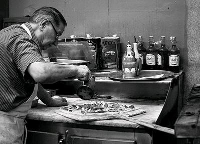

Em 1969, Pornelios Hubson, um imigrante italiano, abriu uma pequena pizzaria em São Paulo, a Bella Napoli. Com sua paixão pela culinária e ingredientes frescos, suas pizzas logo se tornaram as favoritas da cidade. Ao longo dos anos, a pizzaria cresceu em popularidade, tornando-se um ponto de encontro para os moradores locais. Hoje, a Bella Napoli continua a ser um marco na gastronomia paulistana, honrando o legado de seu fundador com cada fatia deliciosa.
Ao longo dos anos, expandimos nossos sabores e conquistamos a confiança e o paladar dos nossos clientes.
